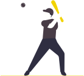

EXPOTEC
2023
RICHARD DOMINGOS NASCIMENTO JUNIOR
GUILHERME FELIPE MARQUES DOS SANTOS
LOUISE SANTIAGO
ARTHUR HENRIQUE
HELOÍSA LEANDR
A DA MATA
- CMR2A
Hábitos saudáveis são costumes, ações e escolhas regulares que
contribuem para a saúde.
Este relatório detalhou nossa participação na Expotec 2023, um
evento dedicado à
inovação e educação. Nosso projeto tinha como objetivo promover
o esporte, a
alimentação saudável e a conscientização sobre a importância de
ambos.
FIM
Hábitos saudáveis são costumes, ações e escolhas regulares que
contribuem
para a saúde e o bem-estar da criança. Ou seja, uma rotina que
envolve aprendizados
e elementos favoráveis ao desenvolvimento infantil. Com uma
rotina saudável, a
criança receberá uma série de estímulos e aprendizados
práticos sobre cuidados com
o corpo, relacionamentos, gestão da emoção, importância dos
estudos etc. E o mais
importante: com o tempo, ela perceberá os benefícios da adoção
de práticas saudáveis
e, autonomamente, trará outras ações positivas para seu
cotidiano. Então, não perca
mais tempo e entenda como começar agora mesmo! Estabeleça
limites para o uso de
tecnologia e tempo de tela A Sociedade Brasileira de Pediatria
(SBP) recomenda que o
tempo de tela deve ser o menor possível, seja qual for a
idade. Geralmente,
dispositivos eletrônicos, televisão, smartfones e videogames
entram na rotina de
crianças para combater o tédio, promover distração ou como
recompensas. No
entanto, fato é que até o ócio é saudável para estimular a
criatividade, fazer com que as crianças observem o mundo, se
relacionem e brinquem com amigos e familiares.
Então, estabeleça limites e regras para o uso das tecnologias
como: quantidade de
horas por dia, horário mais adequado (evitando os períodos
noturnos) e sempre de
forma supervisionada, entre outros. Crie uma rotina diária de
estudos Definir um
ambiente e um horário fixo para os estudos ajuda a criar o
senso de compromisso com
o aprendizado. Mesmo que a escola não envie exercícios,
mantenha o cronograma
revisando o que foi estudado na escola ou mesmo o estudo da
matéria. Esse é um
hábito saudável que, quando internalizado, ajudará a criança
em toda sua fase escolar
e também adulta, já que o desenvolvimento contínuo é muito
importante para qualquer profissional. Incentive atividades ao
ar livre e na natureza Atividades ao ar livre promovem grande
bem-estar, trazem estímulos visuais e, principalmente,
produzem memórias afetivas para toda a família. Seja um
passeio no parque, seja uma ida ao clube, esses momentos de
atenção plena fortalecem a conexão familiar, aumentam a
autoestima das crianças e são muito divertidos, o que reforça
o entendimento das crianças que hábitos saudáveis longe das
tecnologias podem ser muito prazerosos.
Promova atividades coletivas e extracurriculares Propor
brincadeiras com vizinhos do
bairro, criar uma ação beneficente na turma da escola e
participar de atividades
extracurriculares também são atividades saudáveis e ricas em
estímulos. O
pensamento coletivo, a gestão de relacionamentos com pessoas
fora do círculo familiar
e a conquista de resultados a partir da colaboração são
ensinamentos valiosos para
qualquer indivíduo em desenvolvimento. Aqui também cabem as
aulas coletivas
extracurriculares como esportes, lutas, danças, robótica,
culinária e tudo mais que
despertar o interesse das crianças. Ofereça alimentos ricos em
nutrientes para
fortalecer os hábitos saudáveis É claro que a alimentação rica
em nutrientes também
faz parte dos hábitos saudáveis — contudo, é comum que a
família encontre
resistência nessa hora. A dica é envolver as crianças nos
preparos, explicar sobre seus
benefícios para a saúde, persistir na oferta e, claro, dar o
exemplo com uma dieta
igualmente saudável. Esses não são os únicos hábitos saudáveis
que podem ser
inseridos na rotina da família, mas cada um deles pode ser o
pontapé inicial para que a
própria criança demande ou coordene uma rotina de qualidade e
bem-estar para todos.
Então, faça uma introdução de alguns deles de forma afetuosa e
gradativa. Perceba os
resultados e vá ajustando de acordo com a realidade da sua
família.
DESENVOLVIMENTO DE HÁBITOS SAUDÁVEIS
Os esportes e sua influência na cognição e função cerebral têm
sido temas de estudo e debate ao longo dos anos, e as
descobertas científicas têm demonstrado consistentemente os
benefícios significativos que a prática esportiva pode trazer
para o funcionamento do cérebro humano. Este texto
dissertativo explorará como os esportes afetam a cognição e a
função cerebral das pessoas, destacando os aspectos positivos
desse relacionamento. Em primeiro lugar, é importante
ressaltar que a prática regular de esportes tem um impacto
positivo na saúde física, o que, por sua vez,beneficia a saúde
cerebral. O exercício físico promove o fluxo sanguíneo e a
oxigenação adequados do cérebro, melhorando a capacidade
cognitiva. Além disso, a atividade física estimula a liberação
de neurotransmissores como a dopamina e a serotonina, que
estão relacionados ao humor e à função cognitiva. Isso pode
ajudar a reduzir o estresse, a ansiedade e a depressão,
fatores que, quando presentes em excesso, podem prejudicar a
função cerebral.
A prática esportiva também está diretamente relacionada ao
desenvolvimento de
habilidades cognitivas, como a concentração e a memória. Os
atletas precisam manter
a atenção em seus movimentos, estratégias e no ambiente ao seu
redor. Isso melhora a capacidade de foco e a agilidade mental.
Além disso, o treinamento esportivo envolve a repetição de
padrões de movimento e técnicas, o que contribui para o
desenvolvimento da memória muscular e da memória de
procedimento, processos que
envolvem o armazenamento e a recuperação de informações
importantes.
COGNIÇÃO E FUNÇÃO CEREBRAL
Praticar esportes com frequência é mostrar que se importa com
a saúde do seu corpo, além de ser um grande investimento para
o seu bem-estar durante o envelhecimento. A prática do esporte
melhora o condicionamento físico, diminui os riscos de doenças
além de nos levar a um envelhecimento saudável, tudo isso faz
com que as nossas habilidades físicas durem por mais tempo,
garantindo a independência e a qualidade de vida mesmo com o
passar dos anos.
Além de melhorar a aptidão física, o exercício físico regular
traz inúmeros benefícios para a saúde mental, como melhorar a
capacidade cognitiva, concentração, foco e memória. A prática
também melhora a qualidade do sono, auxilia no controle de
ansiedade e depressão e melhora a autoestima.
BENEFÍCIOS FÍSICOS E MENTAIS
APR
OVEITE
NOSSA
EXPOTEC!!